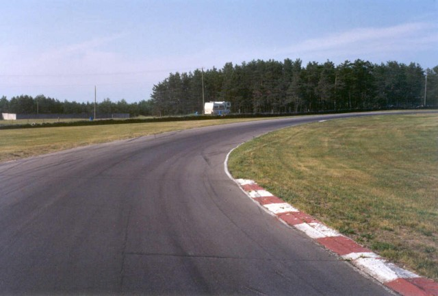
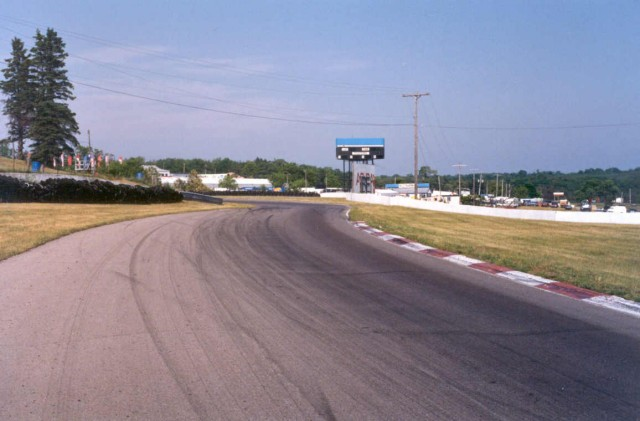
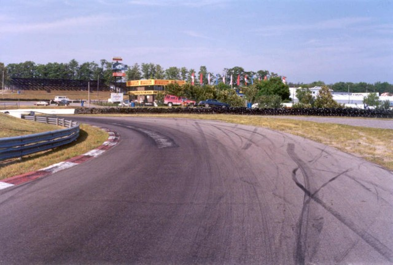
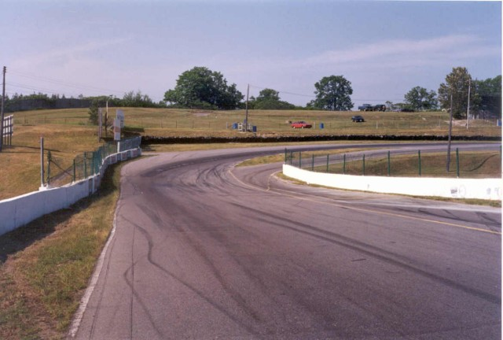
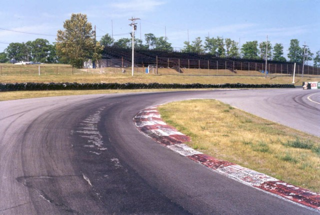

Numbers on the map are the turn numbers. Click hyperlinks above to view the photographs.
Mosport - Turns 8, 9 and 10
|| Contents || Start Straight & Turn 1 | Turns 2 & 3 | Turn 4 | Turn 5 | Turns 6 & 7 | Turns 8, 9 & 10 || Home ||
Numbers on the map are the turn numbers. Click hyperlinks above to view the
photographs.
Return to racingcircuits.net's Photo Archive Main Index

26 - Turn 8 Middle

27 - Turn 8 Exit

28 - Turn 9

29 - Turn 9 Exit

30 - Turn 10
| << PREVIOUS PAGE |
| Photographs and Text ©Chris Mann. Reproduced here with kind permission. | Photograph #27 has been digitally
altered to remove tobacco advertising. |